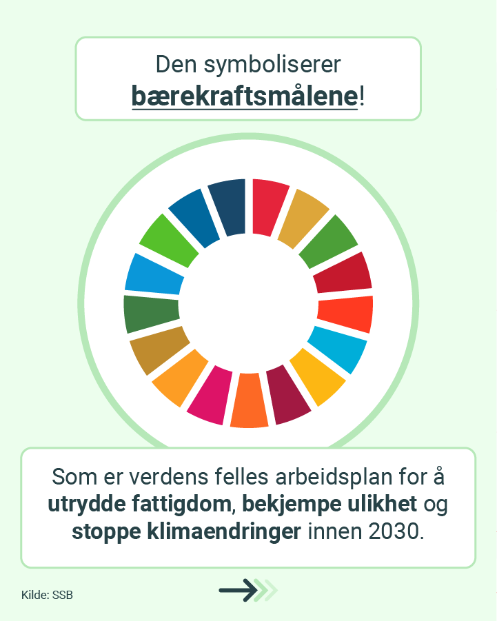
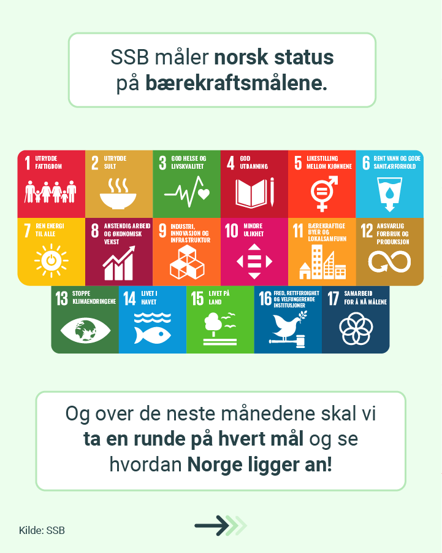
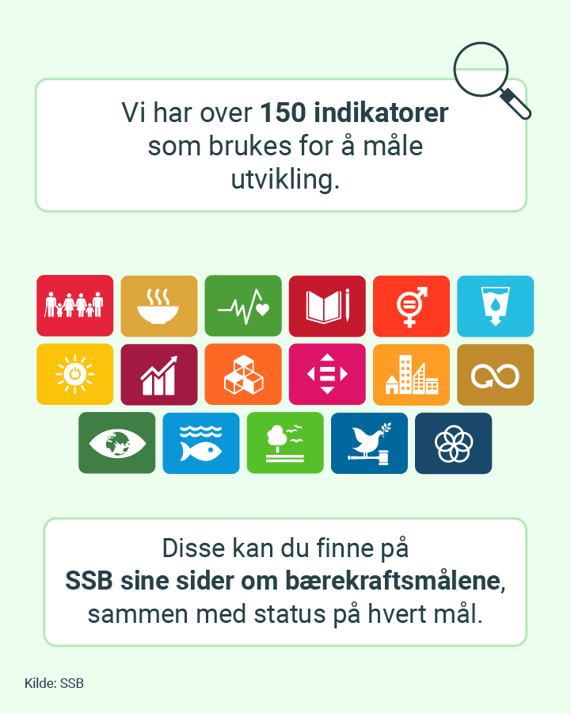

Bærekraftsmålene
Instagram-kampanje for Statistisk sentralbyrå
I 2024 utviklet jeg en kampanje for SSB med mål om å øke interessen for FNs bærekraftsmål og samtidig synliggjøre hvordan Norge faktisk måler utviklingen mot målene.
Målgruppe og kanal
Kampanjen var primært rettet mot personer mellom 25 og 34 år, med 18–24 år som sekundær målgruppe. Instagram var hovedkanalen, med mulighet for videre bruk i SSBs øvrige sosiale medier.
Formål
Kampanjen skulle gjøre bærekraftsmålene lettere å forstå og mer relevante for et norsk publikum.
Et viktig poeng var å vise at målene ikke bare er overordnede FN-ambisjoner, men noe Norge følger utviklingen på gjennom konkrete indikatorer og statistikk.
Konsept og innhold
Kampanjen bestod av 18 planlagte innlegg: ett introduksjonsinnlegg om bærekraftsmålene og ett innlegg knyttet til hvert av de 17 målene.
For hvert mål valgte jeg ut relevant norsk statistikk som kunne gjøre temaet konkret og forståelig. Innholdet skulle være enkelt, visuelt og i tråd med SSBs eksisterende profil og designmanual.
SSB skulle samtidig beholde en nøytral rolle. Målet var ikke å argumentere politisk for bestemte løsninger, men å bruke statistikk til å vise hvordan Norge ligger an.
Arbeidsprosess
Arbeidet startet med å sette meg inn i bærekraftsmålene og SSBs nasjonale indikatorer. Deretter utviklet jeg en innholdsoversikt med tema, statistikk og kontekst for hvert innlegg.
Prosessen bestod av fire hovedsteg:
- Sette meg inn i mål og tilgjengelig statistikk.
- Velge relevant innhold og vinkling for hvert bærekraftsmål.
- Utvikle grafisk uttrykk og publiseringsplan.
- Produsere og publisere innleggene fortløpende.
Ønsket effekt
Målet var at målgruppen skulle sitte igjen med en bedre forståelse av bærekraftsmålene og hvordan utviklingen måles i Norge.
Kampanjen skulle også bidra til økt rekkevidde og engasjement i SSBs sosiale kanaler, samt gjøre statistikken mer relevant for medier og et yngre publikum.
Utvalgte innlegg
Bla gjennom bildene i hvert innlegg, eller se innlegget på Instagram.
Innlegg 1




Innlegg 2
Innlegg 3
Innlegg 4
Innlegg 5